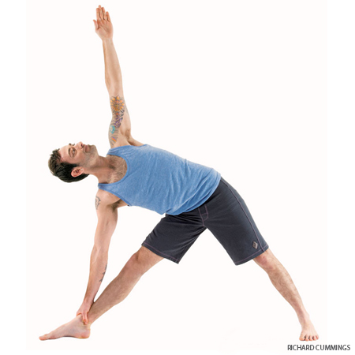

Headache
High or low blood pressure
Insomnia
If you have any neck problems don't turn your head to look at the top arm; instead look straight ahead with the sides of the neck lengthened evenly, or look down at the floor.
Benefits
Stretches the groins, spine, waist, chest and lungs, and shoulders
Stimulates abdominal organs
Increases stamina
Strengthens and stretches the legs, knees, and ankles
Extended Triangle Pose

Pose Information
Sanskrit Name : Utthita Trikonasana
Pose Level : 1
Contraindications and Cautions
Diarrhea
Headache
Low blood pressure
Heart Condition: Practice against a wall. Keep the top arm on the hip.
High blood pressure: Turn the head to gaze downward in the final pose.
Neck problems: Don't turn your head to look upward; continue looking straight ahead and keep both sides of the neck evenly long.
Benefits
Calms the brain and helps relieve stress and mild depressionStretches the hips, groins, hamstrings, and calves; shoulders, chest, and spine
Helps relieve the symptoms of menopause
Relieves backache, especially through second trimester of pregnancy
Therapeutic for anxiety, flat feet, infertility, neck pain, osteoporosis, and sciatica